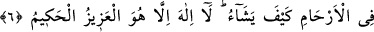
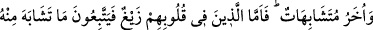

MUTLAK GÜÇ SÂHİBİ
1. Elif. Lâm. Mîm.
2. Hayy ve kayyûm olan Allah’dan başka ilah yoktur.
3.4. (Rasûlüm!) O, sana Kitab’ı hak ve önceki kitapları tasdik edici olarak
tedrîcen indirmiş; daha önce de, insanlara doğru yolu göstermek üzere Tevrat ile
İncil’i ve Furkan’ı inzal etmiştir. Bilinmeli ki, Allah’ın âyetlerini inkâr edenler için
şiddetli bir azap vardır. Allah, suçlunun hakkından gelen mutlak güç sahibidir.
5. Şüphesiz ki ne yerde ne de gökte hiçbir şey Allah’a gizli kalmaz.
6. Rahimlerde sizi dilediği gibi şekillendiren O’dur. O’ndan başka ilah yoktur. O
mutlak güç ve hikmet sahibidir.
7. Sana Kitab’ı indiren O’dur. O’nun (Kur’ân’ın) bazı âyetleri muhkemdir ki,
bunlar Kitab’ın esasıdır. Diğerleri de müteşâbihtir. Kalplerinde eğrilik olanlar, fitne
çıkarmak ve onu tevil etmek için ondaki müteşâbih âyetlerin peşine düşerler.
Halbuki O’nun te’vîlîni ancak Allah bilir. İlimde yüksek pâyeye erişenler ise: Ona
inandık; hepsi Rabbimiz tarafındandır, derler. (Bu inceliği) ancak akl-ı selîm